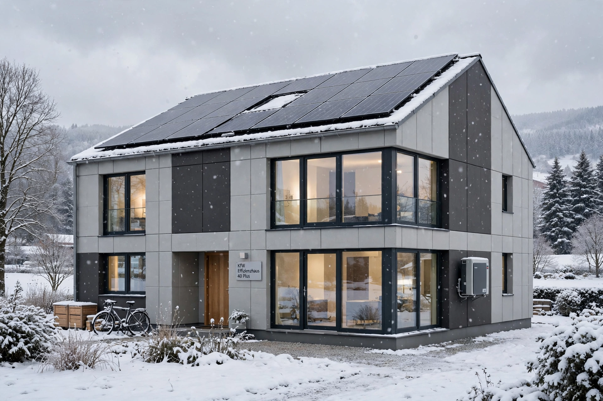

Passive house
| Passive House | |
| Standard | Passivhaus |
|---|---|
| Origin | Darmstadt, Germany (1991) |
| Founders | Wolfgang Feist, Bo Adamson |
| Heating demand | ≤ 15 kWh/m2 per year |

Passive house (German: Passivhaus) is a voluntary standard for energy efficiency in buildings, which reduces a building's heating demand so drastically that a conventional heating system becomes unnecessary. The concept was developed by Wolfgang Feist and Bo Adamson, and the first certified houses were built in Darmstadt, Germany, in 1991.
Principles
Passive houses rely on superinsulation, an airtight building envelope, elimination of thermal bridges, high-performance windows (usually triple-glazed), and mechanical ventilation with heat recovery, which supplies fresh air while retaining most of the heat of the exhaust air. Passive solar gains and internal heat from occupants and appliances provide much of the remaining warmth.
Criteria and spread
Certification requires a space heating demand of no more than 15 kWh per square metre per year and airtightness of at most 0.6 air changes per hour at 50 pascals. Tens of thousands of passive houses have been built worldwide, and the standard has been extended to schools, offices and retrofits (EnerPHit).
See also: Zero-energy building, Heat recovery ventilation.